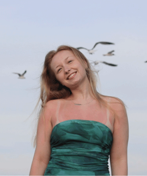

Aaliyah Zimmerman's Portfolio for AENG110 Class |
||
|
|
Student at Millersville University  |
My name is Aaliyah Zimmerman and Im a Computer-Aided Draft and Design major. I went to high school in York, PA, and graduated with honors. I was a swimmer for 11 years, leading me to now coach for the same club I swam for this summer. Im really excited about this because I am going to be coaching with the coach that coached me when I was 7, so its really a full circle moment. I work at Texas Roadhouse now as a hostess, and I am hoping to soon be a server. I used to work at Auntie Annes, until about two weeks ago. I am hoping to one day be an architectural drafter of some kind, I love designing things on the computer, especially buildings. I also enjoy things like video editing and graphic design as well. I used to run the swim Instagram account for my high school, and I always had to make cool graphics for the meet days and everything and it was really fun. |
| Home Digital Photography Infographic Bookmark | ||
|
| ||